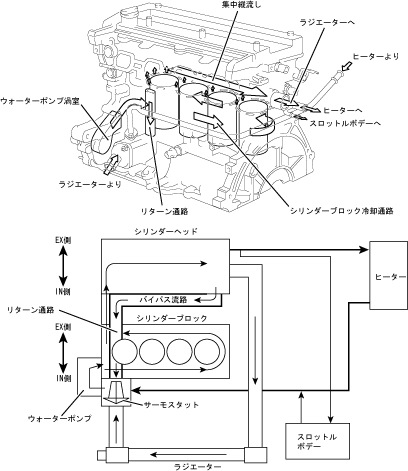

| General cooling |
| ● |
The cooling system is a water -cooled pressure forced cycle of cylinder block U -turn cooling, and adopts a bottom bypass type with a bypass valve with bypass valve on the water inlet side.In addition, the adoption of large thermostats and the optimal arrangement of inlet housing have reduced the inhalation pressure loss, and a sufficient cooling water cycle flow has been secured.
|
| ● |
The water pump vortex and thermostat housing are integrated with the cylinder block, and the engine is compact as a structure that presses the outlet union and heater hot water outlet union into the cylinder head.
|
| ● |
By integrating the bypass flow path into cylinder head and cylinder block, the engine has been compacted.
|
|  |